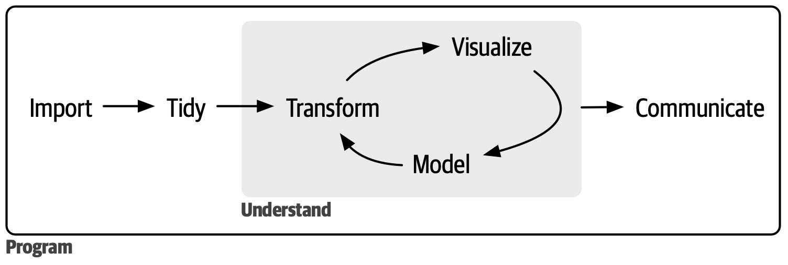

Introducción a R y RStudio
Taller 1 · Sesión 1 · Cuaderno de aprendizaje autónomo
En esta sesión verás cómo se pasa de una encuesta a un resultado que otra persona pueda comprobar. Después conocerás las herramientas del taller y prepararás tu ordenador para ejecutar las primeras instrucciones.
Pulsa Siguiente para empezar o usa el índice para volver a un apartado.
En este cuaderno
- Presentación
- De la pregunta al resultado
- R y RStudio en el taller
- Elegir entre R y Python
- 1. Primeros pasos
- Tour por RStudio
- Un script de R y un documento Quarto
- Crea el proyecto del taller
- Crea tu documento Quarto
- Objetos y valores
- Tipos de datos
- Operaciones aritméticas
- Operadores lógicos
- Funciones
- Estructuras de datos
- Vectores
- Consultar y modificar un vector
- Paréntesis y corchetes
- Seleccionar valores con un criterio
- Valores ausentes
- Crear un data frame
- Conocer y descargar la encuesta
- Instalar y cargar paquetes
- Importar el CSV
- Explorar los datos
- Consultar columnas, celdas y filas
- Factores y niveles
- Factores sin orden y con orden
- Interpretar los mensajes de R
- Qué revisar cuando algo falla
- Próxima sesión y lecturas
De la pregunta al resultado
¿Cuántas horas de televisión ven al día las personas encuestadas? Para responder, necesitamos saber qué mide la encuesta, encontrar la columna correspondiente y decidir qué hacer cuando falta una respuesta. Usaremos esta pregunta para seguir el recorrido que va desde un archivo de datos hasta un resultado que otra persona pueda entender y comprobar.

El esquema de R for Data Science distingue la preparación de los datos, su exploración y la comunicación de los resultados. Las flechas del centro forman un ciclo. Si un gráfico te muestra algo inesperado, puedes volver a los datos, revisar cómo los has preparado y rehacer el gráfico. Escribir los pasos en R permite repetir ese recorrido. Wickham, Çetinkaya-Rundel y Grolemund, R for Data Science, 2.ª ed., introducción.
El proceso paso a paso
Trabajaremos con encuesta_social.csv, un archivo que guarda en forma de tabla una selección de respuestas de la General Social Survey de Estados Unidos. La columna tvhours recoge las horas diarias de televisión. Documentación de gss_cat.
- Importar. Abrimos el CSV desde R y lo cargamos como una tabla de datos. Comprobamos que se han leído las 21 483 observaciones y las 9 variables del archivo.
- Ordenar. Revisamos que la estructura de la tabla tenga sentido para la pregunta. Cada fila corresponde a una observación, cada columna a una variable y cada celda contiene un solo valor. En este archivo, la edad está en
agey las horas de televisión están entvhours. Ordenar en el sentido de tidy data se refiere a esa estructura. Podemos cambiar el orden de las filas y la tabla seguirá teniendo la misma estructura. Capítulo sobre datos ordenados. - Transformar. Preparamos los datos para responder a la pregunta. En este caso, contamos cuántas personas tienen un valor registrado en
tvhoursy calculamos la media con esos valores. Una respuesta de cero horas entra en el cálculo. Una celda conNAindica que falta el dato y queda fuera de esa media. - Visualizar y modelar. Un gráfico mostraría cuántas personas declararon cada número de horas. Un modelo estadístico ayudaría a estudiar una pregunta distinta, como si las horas de televisión tienden a aumentar con la edad. Para la pregunta de esta sesión basta con describir las respuestas del archivo.
- Comunicar. Indicamos qué hemos calculado, en qué unidad y con cuántas respuestas. En este archivo, entre las 11 337 personas con horas registradas, la media es de 2,98 horas diarias de televisión. Si alguien quiere comprobarlo, podrá seguir los pasos que hayamos anotado.
Antes de seguir. Una persona declara que ve cero horas de televisión y de otra no hay un dato registrado. ¿Cuál de las dos cuenta al calcular la media?
Ver respuesta
La persona que declara cero horas cuenta como una respuesta más y aporta un cero a la suma. Para la otra persona, desconocemos las horas. Por eso la media se calcula con las respuestas que sí están registradas.
R y RStudio en el taller
R es un lenguaje de programación pensado para trabajar con datos, hacer análisis estadísticos y crear gráficos. El programa R interpreta las instrucciones escritas en ese lenguaje y ejecuta los cálculos. Proyecto R.
RStudio es la aplicación donde trabajaremos con R. Desde su ventana puedes escribir instrucciones y ver qué devuelve R. Después de instalar los dos programas, recorreremos esa ventana para aprender dónde se hace cada cosa. Guía de RStudio.
¿Por qué empezamos con R?
En Ciencias Sociales es habitual recibir una tabla de respuestas y necesitar una media, una comparación entre grupos o un gráfico. R reúne herramientas para preparar esos datos, analizarlos y presentar los resultados. Además, es software libre y puedes usarlo en casa. Proyecto R.
Imagina que dentro de un mes alguien te pregunta cómo obtuviste las 2,98 horas de televisión. Si guardaste el código y anotaste qué archivo usaste y cómo trataste los valores ausentes, podrá revisar qué respuestas entraron en la media. Si recibes una versión corregida del CSV con la misma estructura, puedes volver a ejecutar esos pasos y comprobar qué cambia. Introducción de R for Data Science.
Elegir entre R y Python
¿Cuándo puede convenir Python?
Python es un lenguaje de propósito general. Se usa para analizar datos y también para tareas como automatizar la descarga periódica de archivos o desarrollar aplicaciones web. Puede ser una elección práctica si el equipo ya usa Python para esas tareas o si necesita una herramienta que ya tiene disponible en ese lenguaje. Aplicaciones de Python.
Por ejemplo, si estudias miles de actas municipales, podrías usar Python para recopilar los documentos y extraer el texto. Si el equipo trabaja con R para el análisis, puede recibir una tabla con una fila por documento y continuar desde ahí.
R y Python: ¿cuál elegir?
Piensa en la tarea que tienes delante, las herramientas que necesita y quién tendrá que repetir el trabajo. En este taller ya tenemos un CSV y queremos explorar una encuesta, hacer cálculos y explicar las decisiones. Por eso empezaremos con R. En un proyecto más amplio, puedes usar un lenguaje en todo el recorrido o combinar ambos si cada uno resuelve bien una parte.
Antes de seguir. Quieres calcular la media de una columna del CSV en RStudio. ¿Qué herramienta ejecutará el cálculo? Si otra persona del equipo ya tiene un programa en Python que descarga una versión nueva del CSV cada semana, ¿podéis aprovecharlo?
Ver respuesta
R ejecutará el cálculo y RStudio será el lugar desde el que escribas y pruebes las instrucciones. Podéis conservar el programa en Python para descargar el CSV y usar R para analizarlo. Lo que conecta ambas tareas es el archivo, que debe mantener las columnas y el formato que espera el análisis.
En el siguiente apartado prepararás tu espacio de trabajo en RStudio. Al final de la sesión volverás a la pregunta sobre las horas de televisión.
1. Primeros pasos
Instala R y RStudio
Instala R primero. RStudio lo necesita para ejecutar el código del taller. Una vez instalados los dos programas, abrirás RStudio para trabajar. Si ya los tienes, puedes pasar a la comprobación al final del apartado.
1. Instala R
Descarga el instalador que corresponda a tu sistema. Las páginas de CRAN indican qué versiones del sistema son compatibles.
- Windows. Descarga el instalador
.exede la sección Download R for Windows. Ábrelo desde Descargas y sigue los pasos del asistente. R para Windows. - macOS. En el menú Apple , abre Acerca de este Mac. Si ves Chip Apple, elige el paquete
arm64. Si ves un procesador Intel, eligex86_64. Abre el archivo.pkgy sigue el asistente. R para macOS. - Linux. Sigue las instrucciones de CRAN para tu distribución, e.g. Ubuntu, Debian o Fedora. R para Linux.
2. Instala RStudio Desktop
En la página de Posit, ve a RStudio Desktop y descarga el instalador para tu sistema. En Windows, abre el .exe y sigue el asistente. En macOS, abre el .dmg y arrastra RStudio a Aplicaciones. En Linux, instala el paquete indicado para tu distribución. Comprueba en la página qué versiones de tu sistema admite cada instalador. Descargas de RStudio Desktop.
Comprueba que funciona
Abre RStudio y pulsa la pestaña Console. Busca el símbolo >, que indica que R está listo para recibir una instrucción. Escribe 2 + 3 y pulsa Enter.
# Pide a R que sume dos números.
2 + 3[1] 5Si aparece el 5, RStudio ha podido enviarle la instrucción a R y mostrar el resultado. Si RStudio indica que no encuentra R, comprueba que terminaste la instalación de R y vuelve a abrir RStudio.
Tour por RStudio
Ya has usado la consola para hacer una suma. Ahora fíjate en qué parte de la ventana puedes escribir el código que quieres guardar, dónde ves lo que R tiene en memoria y dónde están tus archivos.
La captura muestra una sesión de trabajo que ya está en marcha. Por ahora, fíjate en los nombres de los paneles. Si tu ventana tiene otra distribución, busca esos mismos nombres.
1. Editor
El editor es el espacio donde escribes y revisas lo que quieres guardar en un archivo. En la captura ocupa la parte superior izquierda y tiene dos archivos abiertos, cada uno en su pestaña. Si acabas de abrir RStudio, puede que solo veas la consola a la izquierda. El editor aparecerá cuando abras o crees un archivo.
2. Consola (Console)
Aquí probaste 2 + 3 al terminar la instalación. El símbolo > señala dónde escribir la instrucción. Tras pulsar Enter, R muestra su respuesta en la misma consola.
3. Entorno (Environment)
Muestra los datos y resultados a los que se les ha dado un nombre mientras se trabaja con R. En la captura puedes ver edad con el valor 25. Si solo has hecho la suma de la instalación, es normal que tu panel esté vacío.
4. Archivos y otras pestañas
- Files muestra lo que hay guardado en una carpeta. En la captura puedes ver la lista de archivos debajo de Name.
- Plots muestra los gráficos que generas con R.
- Packages permite consultar los paquetes instalados, que son conjuntos de herramientas que amplían lo que puedes hacer con R.
- Help permite consultar la ayuda de R.
Antes de seguir. Mira tu ventana de RStudio. ¿Dónde escribirías otra suma? ¿En qué pestaña buscarías un archivo que ya guardaste?
Ver respuesta
Puedes probar la suma en Console y buscar el archivo en Files.
Un script de R y un documento Quarto
Ya sabes dónde se escribe código y dónde aparece la respuesta de R. Ahora veremos dos maneras de guardar esas instrucciones. Puedes reconocer cada tipo de archivo por lo que viene después del punto en su nombre, .R o .qmd.
- Un script
.Rguarda instrucciones de R y puede incluir comentarios que empiezan por#. Desde RStudio puedes ejecutar una línea, una selección o el script completo. Al probar un cálculo en la consola, verás allí lo que devuelve R. - Un documento Quarto
.qmdcombina explicaciones y código. El código se escribe en bloques, unos recuadros donde puedes colocar y ejecutar una o varias instrucciones. Usaremos el editor Visual de RStudio para escribir el documento. Cuando pulses Render, Quarto ejecutará los bloques y generará un archivo HTML con el texto y los resultados que podrás leer en el navegador. Quarto en R for Data Science.
El mismo cálculo en los dos archivos
Recupera la suma que usaste al comprobar la instalación. Puedes guardar la misma instrucción en un script o en un bloque de R de Quarto.
# Suma dos números.
2 + 3[1] 5En Quarto puedes añadir debajo del bloque una frase para explicar el cálculo, e.g. «Sumé 2 y 3 para comprobar que R funciona». Al pulsar Render, podrás leer la instrucción, el resultado y tu explicación en el mismo HTML.
Por qué usaremos Quarto en el taller
Si estás empezando, ayuda poder trabajar en pequeños pasos. Escribes un bloque, lo ejecutas, compruebas el resultado y anotas lo que significa antes de pasar al siguiente. Cuando vuelvas al documento en casa, tendrás a mano tanto las instrucciones como el motivo por el que las escribiste.
Antes de seguir. Has generado un HTML y quieres corregir una explicación. ¿En qué archivo harías el cambio?
Ver respuesta
Abre el archivo .qmd en RStudio, cambia la explicación o el código y pulsa Render. Quarto generará el HTML actualizado a partir de ese documento.
Crea el proyecto del taller
En el tour vimos la pestaña Files, donde puedes consultar los archivos de una carpeta. Ahora vamos a crear una carpeta propia para el taller y decirle a RStudio que la use como punto de partida.
Un proyecto de RStudio tiene una carpeta principal y un archivo con extensión .Rproj que permite abrirla como espacio de trabajo. En esa carpeta guardaremos los datos, el código y los resultados del taller. Cuando abras el proyecto otro día, RStudio volverá a situarte en la misma carpeta. Guía de proyectos de RStudio.
Crea taller_R en RStudio Desktop
- En el menú superior, elige File → New Project….
- En la ventana que se abre, pulsa New Directory y después New Project. Así RStudio creará la carpeta y el proyecto juntos.
- En Directory name, escribe exactamente
taller_R. En Create project as subdirectory of, elige la carpeta donde quieres guardarlo, e.g. Documentos. RStudio crearátaller_Rdentro del lugar que elijas. - Pulsa Create Project. RStudio abrirá el proyecto que acabas de crear.
Si ya abriste un proyecto taller_R para el taller, puedes pasar directamente a la comprobación.
Comprueba que estás en el proyecto
En RStudio Desktop, busca taller_R en la esquina superior derecha. En Files debería aparecer taller_R.Rproj. RStudio crea ese archivo al preparar el proyecto. Cuando retomes el taller, ábrelo con un doble clic desde la carpeta taller_R o desde File → Open Project… en RStudio.
Crea tu documento Quarto
- Con el proyecto
taller_Rabierto, elige File → New File → Quarto Document…. - En Title, escribe
quarto. Selecciona HTML, deja marcada la opción Use visual markdown editor y pulsa Create. - Guarda el documento como
quarto.qmdjunto ataller_R.Rproj. Si aparece contenido de ejemplo, puedes borrarlo del cuerpo del documento. - En el editor Visual, coloca el cursor en una línea vacía. Abre el desplegable junto al icono verde con una C y un + y elige R.
- Escribe este cálculo dentro del bloque y pulsa el triángulo verde del bloque para ejecutarlo.
# Comprueba que puedes ejecutar un bloque de R.
2 + 3[1] 5Genera tu primer HTML
Si aún no tienes instalado rmarkdown, ejecuta esta instrucción en la consola de RStudio. Quarto lo usa para preparar documentos con código de R. Instalación para usar R con Quarto.
# Instala el paquete que prepara Quarto para generar documentos con R.
install.packages("rmarkdown")Con el paquete instalado, guarda el documento y pulsa Render. Comprueba que el HTML muestra el cálculo y el resultado, 5.
En los próximos pasos probarás instrucciones cortas en la consola. Volverás a quarto.qmd cuando empieces a trabajar con vectores. Guía de Quarto en RStudio.
Objetos y valores
En la primera fila de gss_cat, la persona encuestada tiene 26 años. Vamos a usar ese dato para aprender a guardarlo con un nombre y volver a utilizarlo. Para practicar basta con escribir el número en la consola de RStudio. Cargaremos el archivo completo más adelante. Datos de la encuesta gss_cat.
Guarda un valor con un nombre
Escribe age <- 26 en Console y pulsa Enter. Puedes leerlo como «age recibe 26».
# Guarda la edad de la primera persona encuestada.
age <- 2626es el valor que queremos guardar.agees el nombre que usamos para referirnos a ese valor. También es el nombre de la columna de edad en la encuesta.<-es el signo de asignación. Le pide a R que guarde lo que hay a la derecha con el nombre de la izquierda.
Acabas de crear un objeto llamado age. La asignación guarda el valor en la sesión de R. Para verlo, escribe el nombre en la consola.
# Consulta el valor que acabas de guardar.
age[1] 26También puedes localizar age en Environment, el panel que vimos en el tour. Escribe el nombre tal como lo creaste. R distingue entre age y Age.
Usa el objeto en un cálculo
¿Qué edad tendría esa persona cinco años después? Escribe age + 5. R busca el valor de age y le suma 5.
# Suma cinco años a la edad guardada.
age + 5[1] 31Si vuelves a escribir age, verás 26. La suma mostró el resultado y el objeto conserva la edad original.
Pruébalo. En esa misma fila de la encuesta constan 12 horas diarias de televisión. Guarda el 12 con el nombre tvhours y comprueba qué valor te devuelve R al escribir ese nombre.
Ver solución
# Guarda las horas y consulta el valor.
tvhours <- 12
tvhours[1] 12Tipos de datos
Repaso opcional sobre cómo se miden las variables
Antes de ver cómo guarda R un dato, conviene preguntarse qué representa ese dato en la encuesta.
Variables que agrupan respuestas en categorías
- Nominal. Las categorías no tienen un orden natural. En
marital, «casado» y «viudo» son respuestas distintas que no se ordenan de menor a mayor. - Ordinal. Las categorías se pueden ordenar. En
rincome, los tramos de ingresos van de menor a mayor. Saber el tramo no te dice cuánto ingresó exactamente la persona. - Binaria. Tiene dos categorías. Si a partir de la edad registramos «¿Tiene 18 años o más?», las respuestas posibles son «sí» y «no».
Variables que expresan cantidades
- Discreta. Toma valores separados. En el archivo,
agerecoge la edad en años cumplidos. Una persona de 26 años y medio figura con 26 años cumplidos. - Continua. Puede tomar valores intermedios según la precisión de la medida. Si midiéramos con un reloj el tiempo dedicado a ver la televisión, podríamos registrar 1,5 horas, 1,51 horas o un valor entre ambos. El archivo del taller recoge las horas declaradas en números enteros.
Al comparar cantidades también importa qué significa el cero. En una escala de intervalo, tienen sentido las diferencias. Entre 2000 y 2002 hay dos años, pero el origen del calendario es una convención y no indica que antes no hubiera tiempo. En una escala de razón, cero indica ausencia de lo que medimos. Cero horas de televisión significa que la persona no vio televisión, y cuatro horas son el doble de dos. La forma de registrar el dato y el significado del cero son dos cuestiones distintas.
En lo que sigue cambiaremos de pregunta. Veremos cómo indicar a R que guarde un valor como número, texto o valor lógico.
En el paso anterior guardamos 26 con el nombre age. En la misma fila de la encuesta hay otros valores, como el año de la entrevista y el estado civil. R distingue qué clase de valor le das por cómo lo escribes.
- Número. Escribe
26sin comillas. R lo reconoce como un número y puedes usarlo en un cálculo. - Texto. Escribe
"Never married"entre comillas. Es la respuesta de la primera persona sobre su estado civil. - Valor lógico. Escribe
TRUEoFALSEen mayúsculas y sin comillas. Sirven para representar verdadero o falso. Como esta persona tiene 26 años, podemos guardarTRUEpara indicar que es mayor de edad. Ese dato lo deducimos de la edad. - Entero. Escribe
2000Lcon la letra L pegada al número. Tanto2000como2000Lrepresentan el mismo año. La L le indica a R que guarde ese número con el tipo entero. Manual de R sobre números.
Prueba estas líneas en la consola. Primero guardas los valores. Después, al escribir cada nombre, ves lo que devuelve R.
# Guarda datos de la primera persona y si es mayor de edad.
age <- 26
marital <- "Never married"
mayor_edad <- TRUE
year <- 2000L
# Consulta los cuatro valores.
age
marital
mayor_edad
year[1] 26
[1] "Never married"
[1] TRUE
[1] 2000Fíjate en que R muestra el texto con comillas. Al mostrar el año, imprime 2000 aunque lo hayas guardado como entero.
Comprueba cómo guardó R un valor
typeof() muestra el tipo de dato que R está usando. Escribe entre paréntesis el nombre del objeto que quieres consultar.
# Comprueba cómo guardó R la edad y el año.
typeof(age)
typeof(year)[1] "double"
[1] "integer""double" es el tipo que R usa cuando escribimos 26. Puede representar números con decimales. "integer" indica que R guardó 2000L como entero. Al consultar solo el valor, los dos se muestran sin decimales.
Si quieres ver a la vez qué tipo tiene un objeto y qué contiene, prueba str(). Su nombre viene de structure, «estructura».
# Mira el tipo y el valor de mayor_edad.
str(mayor_edad) logi TRUElogi indica que el dato es lógico y TRUE es el valor que guardaste.
Pruébalo. Para guardar las horas de televisión como un número, ¿escribirías 12 o "12"? Comprueba qué tipo reconoce R en cada caso con typeof().
Ver respuesta
Escribirías 12. Con comillas, R interpreta "12" como texto. Esta diferencia importa si luego quieres sumar esas horas o calcular una media.
# Compara el mismo valor escrito con y sin comillas.
typeof(12)
typeof("12")[1] "double"
[1] "character"Operaciones aritméticas
Ya has usado + para sumar. En R también puedes usar - para restar, * para multiplicar y / para dividir. Practicaremos en la consola con números de la encuesta que puedes escribir directamente.
Calcula una diferencia
Las dos primeras personas de la encuesta tienen 26 y 48 años. ¿Cuántos años de diferencia hay entre ellas?
# Resta la edad menor de la mayor.
48 - 26[1] 22La diferencia es de 22 años.
Suma y divide para calcular una media
La tercera persona tiene 67 años. Para calcular la edad media de estas tres personas, primero suma sus edades y después divide el total entre 3.
# Suma las tres edades y divide el total entre tres.
(26 + 48 + 67) / 3[1] 47Los paréntesis hacen que R sume primero las edades. Si escribes 26 + 48 + 67 / 3, R divide solo 67 entre 3 y después suma las otras dos edades.
Pruébalo. La primera persona declaró 12 horas diarias de televisión. Si mantuviera ese ritmo los siete días, ¿cuántas horas serían en una semana? Prueba con *.
Ver solución
# Multiplica las horas diarias por los siete días de la semana.
12 * 7[1] 84Serían 84 horas si se mantuviera ese ritmo cada día. Es una estimación a partir de la respuesta diaria.
Operadores lógicos
En el apartado de tipos de datos guardaste TRUE para indicar que una persona era mayor de edad. Ahora le pedirás a R que compruebe una condición con los datos que ya conoces. En los ejemplos de este apartado, R devuelve TRUE (verdadero) cuando la condición se cumple y FALSE (falso) cuando no se cumple.
Comprueba una condición
Abre la consola de RStudio. Usaremos dos valores de la primera persona de la encuesta. Tiene 26 años y su respuesta sobre el estado civil fue «Never married» («nunca se ha casado»). Ejecuta estas líneas para tener los dos valores a mano.
# Guarda la edad y el estado civil de la primera persona.
age <- 26
marital <- "Never married"Ahora prueba las comparaciones una a una. Antes de pulsar Intro, intenta anticipar qué devolverá R.
# ¿Tiene más de 30 años?
age > 30
# ¿Su respuesta es «Never married»?
marital == "Never married"
# ¿Su respuesta es distinta de «Never married»?
marital != "Never married"[1] FALSE
[1] TRUE
[1] FALSE> significa «mayor que», == significa «igual a» y != significa «distinto de». Fíjate en los dos signos de ==. Antes usaste <- para guardar un valor. Aquí usas == para comprobar si dos valores son iguales.
Pide que se cumplan las dos condiciones con «y»
¿Tiene más de 30 años y nunca se ha casado? Escribe & entre las dos comparaciones. Los paréntesis ayudan a ver dónde empieza y termina cada condición.
# Comprueba si se cumplen las dos condiciones.
(age > 30) & (marital == "Never married")[1] FALSELa primera condición da FALSE y la segunda da TRUE. Con & solo obtienes TRUE si se cumplen las dos.
Pide que se cumpla al menos una condición con «o»
¿Tiene más de 30 años o nunca se ha casado? Mantén las mismas comparaciones y cambia & por la barra vertical |.
# Comprueba si se cumple al menos una condición.
(age > 30) | (marital == "Never married")[1] TRUELa primera condición sigue dando FALSE. Basta con que la segunda sea TRUE. Si se cumplieran las dos condiciones, el resultado también sería TRUE.
Pruébalo. Cambia age > 30 por age > 20 en los dos ejemplos. Antes de ejecutarlos, piensa qué devuelve ahora cada comparación y qué resultado esperas con & y con |.
Ver solución
# Comprueba si se cumplen las dos condiciones con el nuevo límite.
(age > 20) & (marital == "Never married")
# Comprueba si se cumple al menos una con el mismo límite.
(age > 20) | (marital == "Never married")[1] TRUE
[1] TRUEComo 26 es mayor que 20 y la respuesta coincide con «Never married», las dos condiciones se cumplen. En este caso, tanto & como | devuelven TRUE.
Funciones
Ya has usado typeof() para averiguar el tipo de un dato. typeof() es una función, una instrucción que R ya sabe ejecutar. Para usar una función, escribe su nombre seguido de paréntesis. Dentro puedes indicar con qué dato quieres trabajar o cómo quieres que se realice la tarea. Esos valores se llaman argumentos.
Usa una función y guarda el resultado
Prueba en la consola con el estado civil de la primera persona de la encuesta. toupper() convierte un texto a mayúsculas.
# Guarda la respuesta original y conviértela a mayúsculas.
marital <- "Never married"
toupper(marital)[1] "NEVER MARRIED"En toupper(marital), toupper es el nombre de la función y marital es el argumento. R toma el texto guardado en marital y devuelve una versión en mayúsculas. Si quieres reutilizar esa versión, guárdala con <- y dale un nombre distinto.
# Guarda la versión en mayúsculas en un objeto nuevo.
marital_mayusculas <- toupper(marital)
# Consulta la versión nueva y la respuesta original.
marital_mayusculas
marital[1] "NEVER MARRIED"
[1] "Never married"Distingue un argumento obligatorio de uno opcional
En toupper(marital), el texto es un argumento obligatorio. La función necesita saber qué texto convertir. Otras funciones también aceptan argumentos opcionales. Con print(), por ejemplo, indicas qué valor quieres mostrar y, si ese valor es un texto, puedes elegir si se muestra entre comillas.
# Muestra la respuesta con la configuración habitual.
print(marital)
# Muestra la misma respuesta sin comillas.
print(marital, quote = FALSE)[1] "Never married"
[1] Never marriedLee la segunda llamada de izquierda a derecha. marital es lo que quieres mostrar. La coma separa los argumentos. quote = FALSE indica que quieres mostrar el texto sin comillas. quote es el nombre del argumento y FALSE es el valor que le das. Si lo omites, R usa el valor por defecto para mostrar este texto, quote = TRUE. Cambia la forma de mostrar la respuesta y marital conserva su valor.
Consulta la ayuda de una función
Escribe un signo de interrogación seguido del nombre de la función en la consola y pulsa Intro. RStudio mostrará la documentación en la pestaña Help.
# Abre la ayuda de la función print.
?printBusca Arguments («argumentos») y localiza quote. La descripción indica qué controla esa opción. Para comprobar el valor por defecto que hemos usado, sigue el enlace print.default y busca quote = TRUE en Usage («uso»). El apartado Examples («ejemplos») muestra llamadas que puedes probar en la consola.
Pruébalo. La segunda persona de la encuesta respondió «Divorced» («divorciado/a»). Guarda esa respuesta en marital_segunda, convierte el texto a mayúsculas y guarda el resultado con otro nombre. Después, muéstralo sin comillas.
Ver solución
# Guarda la respuesta de la segunda persona.
marital_segunda <- "Divorced"
# Guarda una versión en mayúsculas.
marital_segunda_mayusculas <- toupper(marital_segunda)
# Muestra la versión en mayúsculas sin comillas.
print(marital_segunda_mayusculas, quote = FALSE)[1] DIVORCEDEstructuras de datos
Entre las cinco primeras personas de la encuesta, ¿qué edades tienen las que respondieron «Divorced»? Para contestar necesitamos dos datos de cada persona, la edad y el estado civil. Una estructura de datos es la forma en que R organiza esos valores para que podamos consultarlos juntos o por separado.
Un vector guarda los valores de una variable
Hasta ahora, age guardaba un solo valor, 26. Para tener las edades de las cinco personas juntas podemos guardar la secuencia 26, 48, 67, 39, 25 en un vector. Cada número ocupa una posición. Si consultas la segunda, obtienes 48, la edad de la segunda persona.
En los vectores que usaremos, todos los valores son del mismo tipo. Un vector de edades contiene números. Otro vector puede contener las cinco respuestas de estado civil como texto, en el mismo orden. La segunda edad y la segunda respuesta de estado civil pertenecen a la misma persona.
Un data frame reúne las variables de la encuesta
Si colocamos los dos vectores como columnas de una tabla, podemos leer juntas las respuestas de cada persona. En R, esa tabla se llama data frame.
Edad (age) |
Estado civil (marital) |
|---|---|
| 26 | Never married |
| 48 | Divorced |
| 67 | Widowed |
| 39 | Never married |
| 25 | Divorced |
Cada fila corresponde a una persona y cada columna a una variable. Las columnas tienen el mismo número de filas, aunque pueden guardar tipos de datos distintos. Aquí la edad es numérica y el estado civil está escrito como texto. Para contestar la pregunta inicial, busca «Divorced» en la segunda columna y lee la edad en esas mismas filas. Son 48 y 25 años.
Un factor distingue las respuestas de las categorías
Si queremos hacer una tabla de frecuencias del estado civil, nos interesa saber qué categorías hay y cuántas personas aparecen en cada una. Un factor guarda la categoría de cada persona y, además, una lista de categorías posibles. En R, esas categorías se llaman niveles.
Entre estas cinco personas aparecen tres niveles, «Divorced», «Never married» y «Widowed». Dos personas respondieron «Divorced». Sus respuestas siguen en sus respectivas filas y comparten el mismo nivel. En el estado civil, los niveles son categorías sin jerarquía. En una variable como el nivel de estudios, podemos indicar qué categoría va antes que otra.
Vectores
Hasta ahora, age guardaba una sola edad. Vamos a usar ese mismo nombre para guardar las edades de las cinco primeras personas de la encuesta. Un vector permite reunir varios valores en un solo objeto y conservar su orden.
Crea tu primer vector
Pega estas líneas en un nuevo bloque de R de quarto.qmd.
# Guarda las cinco edades en el orden de la encuesta.
age <- c(26, 48, 67, 39, 25)
# Pide a R que muestre lo que hay en age.
agePulsa el triángulo verde del bloque. En el resultado deberías ver las cinco edades.
[1] 26 48 67 39 25c() viene de combine, «combinar». Reúne los valores que escribes entre paréntesis, separados por comas. La primera instrucción guarda el vector en age con <-. La segunda consulta el objeto. El [1] lo añade R al mostrar el resultado e indica que esa línea empieza en la posición 1 del vector.
Comprueba qué has guardado
Inserta otro bloque de R debajo del anterior. Pega estas tres instrucciones y ejecuta el bloque. Las tres consultan age, el objeto que acabas de crear.
# Cuenta cuántas edades hay.
length(age)
# Consulta el tipo de dato y la estructura del vector.
typeof(age)
str(age)[1] 5
[1] "double"
num [1:5] 26 48 67 39 25length() devuelve 5 porque hay cinco elementos. typeof() indica que R los guardó como números de tipo double. En la salida de str(), num indica que el vector es numérico y [1:5] indica que sus posiciones van de la 1 a la 5.
Guarda otras respuestas de las mismas personas
Inserta un tercer bloque, pega el código de abajo y ejecútalo. Crearás dos vectores más. tvhours guarda las horas diarias de televisión y marital guarda el estado civil. Conservamos el orden de la encuesta en ambos. Así, el segundo valor de cada vector sigue correspondiendo a la misma persona.
# Guarda las horas diarias de televisión y el estado civil.
tvhours <- c(12, NA, 2, 4, 1)
marital <- c("Never married", "Divorced", "Widowed", "Never married", "Divorced")
# Consulta los dos vectores.
tvhours
marital[1] 12 NA 2 4 1
[1] "Never married" "Divorced" "Widowed" "Never married"
[5] "Divorced"Cada vector tiene su propio tipo. En tvhours, los números van sin comillas. NA marca que falta la respuesta de la segunda persona y ocupa su posición. En marital, cada respuesta es texto y va entre comillas. R puede repartir la salida en varias líneas. Aquí [5] indica que la última línea empieza en la quinta posición.
Guarda quarto.qmd. En el siguiente paso usarás las posiciones para consultar edades concretas.
Consultar y modificar un vector
| Posición | 1 | 2 | 3 | 4 | 5 |
|---|---|---|---|---|---|
| Edad | 26 | 48 | 67 | 39 | 25 |
En R, la primera posición es la 1. Escribe la posición entre corchetes para consultar un valor. Los dos puntos de 1:3 generan las posiciones 1, 2 y 3. Si las posiciones no son consecutivas, puedes reunirlas con c().
# Consulta la primera edad.
age[1]
# Consulta las tres primeras edades.
age[1:3]
# Consulta solo la primera y la tercera edad.
age[c(1, 3)][1] 26
[1] 26 48 67
[1] 26 67Si quieres practicar cómo cambiar una posición, haz primero una copia. Así podrás seguir usando las edades originales en el resto del cuaderno.
# Copia el vector, cambia la primera edad en la copia y comprueba ambos.
age_modificado <- age
age_modificado[1] <- 27
age_modificado
age[1] 27 48 67 39 25
[1] 26 48 67 39 25Paréntesis y corchetes
Si la primera edad está en age[1], ¿por qué no escribimos age(1)? Porque al cambiar los corchetes por paréntesis, cambia lo que le pides a R. Fíjate en el nombre que aparece antes de cada signo.
Paréntesis () para pedir una operación
En mean(age), mean es la función que calcula la media. Dentro de los paréntesis va el argumento, el dato con el que debe trabajar. En este caso le pasas el vector entero. Si cambias mean por length y dejas age dentro, trabajas con los mismos datos y le pides otra operación.
# Calcula la media de las cinco edades.
mean(age)
# Cuenta cuántas edades hay en el vector.
length(age)[1] 41
[1] 5Corchetes [] para indicar posiciones
En age[1], age es el vector y 1 es la posición que quieres consultar. Puedes pensar en los corchetes como la dirección de un casillero. Si escribes 1:3, señalas tres casilleros seguidos y R te devuelve los valores que ya están ahí.
# Consulta la primera edad.
age[1]
# Consulta las edades de las posiciones 1, 2 y 3.
age[1:3][1] 26
[1] 26 48 67Los corchetes también indican dónde cambiar un valor. En el paso anterior, age_modificado[1] señalaba la primera posición de la copia y <- 27 indicaba qué valor guardar allí.
Vuelve a age(1). Con esos paréntesis, R buscaría una función llamada age y trataría de pasarle 1 como argumento. Como age es el nombre del vector, para pedir su primer valor escribe age[1].
Seleccionar valores con un criterio
Queremos recuperar las edades de las personas mayores de 40 años. Antes comparaste una sola edad con un límite. Ahora R comprueba la misma condición para cada posición de age.
# Comprueba qué edades son mayores de 40 y guarda las respuestas.
criterio <- age > 40
criterio[1] FALSE TRUE TRUE FALSE FALSEEl primer resultado es FALSE porque 26 es menor que 40. El segundo es TRUE porque 48 sí supera ese límite. Cuando pasas criterio entre corchetes, R conserva las edades que están en posiciones marcadas con TRUE.
# Recupera las edades que cumplen el criterio.
age[criterio][1] 48 67Pruébalo. Selecciona las edades menores de 30 años. Puedes probar primero la comparación y después colocarla directamente entre los corchetes.
Ver solución
# Selecciona las edades por debajo de 30 años.
age[age < 30][1] 26 25Valores ausentes
En tvhours, la segunda persona tiene un NA. El archivo carece de un valor de horas de televisión para esa persona. En cambio, un 0 indicaría que la persona declaró cero horas.
# Intenta calcular la media con todos los valores.
mean(tvhours)
# Calcula la media con las horas que sí están registradas.
mean(tvhours, na.rm = TRUE)[1] NA
[1] 4.75Por defecto, mean() devuelve NA cuando encuentra un dato ausente. Con el argumento na.rm = TRUE le pides que lo deje fuera del cálculo. La media de 4,75 horas diarias se ha calculado sumando 12, 2, 4 y 1 y dividiendo entre cuatro respuestas válidas. El vector tvhours conserva sus cinco posiciones.
Crear un data frame
Los tres vectores tienen cinco elementos y siguen el mismo orden de personas. data.frame() los coloca como columnas de una sola tabla. Cada fila reúne los datos de una persona y todas las columnas tienen el mismo número de filas. La edad y las horas son numéricas y el estado civil es texto.
# Reúne edad, estado civil y horas de televisión en una tabla.
datos_muestra <- data.frame(age, marital, tvhours)
datos_muestra age marital tvhours
1 26 Never married 12
2 48 Divorced NA
3 67 Widowed 2
4 39 Never married 4
5 25 Divorced 1Lee la segunda fila de izquierda a derecha. La segunda persona tiene 48 años, respondió «Divorced» y figura con un dato ausente en las horas de televisión. En el siguiente paso pasarás de esta tabla escrita a mano al archivo completo.
Conocer y descargar la encuesta
El archivo del taller contiene gss_cat, una selección de datos de la General Social Survey de Estados Unidos preparada para practicar con R. Incluye 21.483 observaciones y 9 variables. Entre ellas están las tres que acabas de usar. Ficha de gss_cat.
Un CSV es un archivo de texto tabular. En este archivo la primera línea contiene los nombres de las variables y las comas separan las columnas. Al importarlo, R convertirá esas líneas en una tabla con la que podrás trabajar.
- En Files, abre la carpeta del proyecto
taller_Ry pulsa New Folder para creardatos. - Descarga
encuesta_social.csvy muévelo adatos. Si tu navegador añade un sufijo como(1), deja el nombre enencuesta_social.csv. - En Files, entra en
datosy comprueba que aparece el CSV.quarto.qmddebe estar un nivel por encima, junto al archivo del proyecto.
Instalar y cargar paquetes
Un paquete reúne funciones, datos o documentación que amplían lo que puedes hacer con R. Usaremos tidyverse, una colección de paquetes que incluye readr para importar archivos CSV.
Si aún no tienes instalado tidyverse, ejecuta esta instrucción en la consola.
# Instala tidyverse para usar sus herramientas de trabajo con datos.
install.packages("tidyverse")Instalar guarda los paquetes en el ordenador. Cargar un paquete lo deja disponible en la sesión de R que estás usando. Añade la siguiente instrucción a un bloque de quarto.qmd, antes de la importación. Así Quarto también la ejecutará al generar el HTML.
# Carga tidyverse en esta sesión de R.
library(tidyverse)Es normal que aparezcan mensajes sobre los paquetes cargados y sus versiones. La llamada del taller a install.packages() lleva el nombre entre comillas. Con library(tidyverse) puedes escribirlo directamente.
Importar el CSV
read_csv() lee el archivo y lo convierte en una tabla. Usa la ruta "datos/encuesta_social.csv". Significa «entra en la carpeta datos y busca encuesta_social.csv». Esta ruta funciona porque quarto.qmd está en la carpeta principal de taller_R.
# Importa el CSV y guarda la tabla completa.
datos <- read_csv("datos/encuesta_social.csv")
# Muestra las primeras cinco filas para revisar la importación.
head(datos, n = 5)El mensaje de importación indica cuántas filas y columnas se leyeron y qué tipos de datos detectó R. head() te devuelve una vista de las primeras cinco filas. Reconocerás las edades del vector age. La salida se identifica como tibble, una variante del data frame. <dbl> indica números y <chr> indica texto.
Ver las primeras cinco filas
# A tibble: 5 × 9
year marital age race rincome partyid relig denom tvhours
<dbl> <chr> <dbl> <chr> <chr> <chr> <chr> <chr> <dbl>
1 2000 Never married 26 White $8000 to 9999 Ind,near r… Prot… Sout… 12
2 2000 Divorced 48 White $8000 to 9999 Not str re… Prot… Bapt… NA
3 2000 Widowed 67 White Not applicable Independent Prot… No d… 2
4 2000 Never married 39 White Not applicable Ind,near r… Orth… Not … 4
5 2000 Divorced 25 White Not applicable Not str de… None Not … 1Explorar los datos
Antes de hacer un análisis conviene comprobar qué se ha importado. Empieza por las dimensiones y los nombres.
# Comprueba el número de filas y columnas y el nombre de cada variable.
dim(datos)
names(datos)[1] 21483 9
[1] "year" "marital" "age" "race" "rincome" "partyid" "relig"
[8] "denom" "tvhours"dim() muestra primero las filas y después las columnas. Para revisar el contenido, prueba estas funciones una a una.
# Revisa la estructura y el tipo de cada columna.
str(datos)
# Lee un resumen de cada variable.
summary(datos)
# Compara las cinco primeras filas con las cinco últimas.
head(datos, n = 5)
tail(datos, n = 5)Busca age en el resumen. Para esa variable numérica, R muestra valores como el mínimo, la mediana y la media. Busca después tvhours y fíjate en el recuento de NA. El resumen que muestra R depende del tipo de cada columna.
Ver un ejemplo de la salida completa
spc_tbl_ [21,483 × 9] (S3: spec_tbl_df/tbl_df/tbl/data.frame)
$ year : num [1:21483] 2000 2000 2000 2000 2000 2000 2000 2000 2000 2000 ...
$ marital: chr [1:21483] "Never married" "Divorced" "Widowed" "Never married" ...
$ age : num [1:21483] 26 48 67 39 25 25 36 44 44 47 ...
$ race : chr [1:21483] "White" "White" "White" "White" ...
$ rincome: chr [1:21483] "$8000 to 9999" "$8000 to 9999" "Not applicable" "Not applicable" ...
$ partyid: chr [1:21483] "Ind,near rep" "Not str republican" "Independent" "Ind,near rep" ...
$ relig : chr [1:21483] "Protestant" "Protestant" "Protestant" "Orthodox-christian" ...
$ denom : chr [1:21483] "Southern baptist" "Baptist-dk which" "No denomination" "Not applicable" ...
$ tvhours: num [1:21483] 12 NA 2 4 1 NA 3 NA 0 3 ...
- attr(*, "spec")=
.. cols(
.. year = col_double(),
.. marital = col_character(),
.. age = col_double(),
.. race = col_character(),
.. rincome = col_character(),
.. partyid = col_character(),
.. relig = col_character(),
.. denom = col_character(),
.. tvhours = col_double()
.. )
- attr(*, "problems")=<externalptr>
year marital age race
Min. :2000 Length:21483 Min. :18.00 Length:21483
1st Qu.:2002 Class :character 1st Qu.:33.00 Class :character
Median :2006 Mode :character Median :46.00 Mode :character
Mean :2007 Mean :47.18
3rd Qu.:2010 3rd Qu.:59.00
Max. :2014 Max. :89.00
NA's :76
rincome partyid relig denom
Length:21483 Length:21483 Length:21483 Length:21483
Class :character Class :character Class :character Class :character
Mode :character Mode :character Mode :character Mode :character
tvhours
Min. : 0.000
1st Qu.: 1.000
Median : 2.000
Mean : 2.981
3rd Qu.: 4.000
Max. :24.000
NA's :10146
# A tibble: 5 × 9
year marital age race rincome partyid relig denom tvhours
<dbl> <chr> <dbl> <chr> <chr> <chr> <chr> <chr> <dbl>
1 2000 Never married 26 White $8000 to 9999 Ind,near r… Prot… Sout… 12
2 2000 Divorced 48 White $8000 to 9999 Not str re… Prot… Bapt… NA
3 2000 Widowed 67 White Not applicable Independent Prot… No d… 2
4 2000 Never married 39 White Not applicable Ind,near r… Orth… Not … 4
5 2000 Divorced 25 White Not applicable Not str de… None Not … 1
# A tibble: 5 × 9
year marital age race rincome partyid relig denom tvhours
<dbl> <chr> <dbl> <chr> <chr> <chr> <chr> <chr> <dbl>
1 2014 Widowed 89 White Not applicable Not str re… Prot… Unit… 3
2 2014 Divorced 56 White $25000 or more Independent None Not … 4
3 2014 Never married 24 White $10000 - 14999 Ind,near d… None Not … 4
4 2014 Never married 27 White $25000 or more Not str de… Cath… Not … NA
5 2014 Widowed 71 White $20000 - 24999 Ind,near r… Prot… Other 2Consultar columnas, celdas y filas
Con un vector usabas una posición. En una tabla puedes indicar dos coordenadas dentro de los corchetes. Escribe la fila antes de la coma y la columna después.
# Consulta la celda de la fila 1 y la columna 3.
datos[1, 3]
# Consulta la fila 3 completa dejando vacío el lugar de la columna.
datos[3, ]Ver la celda y la fila
# A tibble: 1 × 1
age
<dbl>
1 26
# A tibble: 1 × 9
year marital age race rincome partyid relig denom tvhours
<dbl> <chr> <dbl> <chr> <chr> <chr> <chr> <chr> <dbl>
1 2000 Widowed 67 White Not applicable Independent Protestant No de… 2La tercera columna es age. La primera consulta devuelve una tabla de una fila y una columna, con la edad 26. La segunda devuelve todas las variables de la tercera persona. Con un solo selector, datos["age"] y datos[3] conservan la columna como tabla. En cambio, datos$age devuelve sus valores como vector. Para ver la diferencia, muestra solo los cinco primeros resultados de cada forma.
# Muestra la columna age como tabla, por nombre y por posición.
head(datos["age"], n = 5)
head(datos[3], n = 5)
# Muestra las cinco primeras edades como vector.
head(datos$age, n = 5)Comparar las salidas
# A tibble: 5 × 1
age
<dbl>
1 26
2 48
3 67
4 39
5 25
# A tibble: 5 × 1
age
<dbl>
1 26
2 48
3 67
4 39
5 25
[1] 26 48 67 39 25Factores y niveles
El vector marital tiene cinco respuestas, algunas repetidas. Con factor() puedes representar esas respuestas como una variable categórica. Sus niveles son las categorías que reconoce R. levels() devuelve la lista de niveles.
# Convierte el estado civil de las cinco personas en un factor.
marital_factor <- factor(marital)
# Muestra las cinco respuestas y la lista de categorías.
marital_factor
levels(marital_factor)[1] Never married Divorced Widowed Never married Divorced
Levels: Divorced Never married Widowed
[1] "Divorced" "Never married" "Widowed"Sigues teniendo cinco respuestas en el mismo orden. Entre las cinco aparecen tres categorías distintas. El orden alfabético de las etiquetas en la lista carece de significado estadístico para el estado civil.
Factores sin orden y con orden
Estado civil en la encuesta completa
Al importar el CSV, read_csv() guardó marital como texto. Puedes convertir esa columna en un factor nominal porque sus categorías carecen de una jerarquía natural.
# Revisa cómo se importó la columna de estado civil.
str(datos$marital)
# Convierte la columna a factor y consulta sus niveles.
datos$marital <- factor(datos$marital)
levels(datos$marital)
# Comprueba cómo está representada la columna después del cambio.
str(datos$marital)Ver la estructura y los seis niveles
chr [1:21483] "Never married" "Divorced" "Widowed" "Never married" ...
[1] "Divorced" "Married" "Never married" "No answer"
[5] "Separated" "Widowed"
Factor w/ 6 levels "Divorced","Married",..: 3 1 6 3 1 2 3 1 2 2 ...Ahora str() identifica un factor con seis niveles. Los números que muestra en la estructura son códigos internos de las categorías. La transformación afecta a la tabla datos que tienes en R. El CSV que guardaste en datos/ sigue siendo el archivo original.
Nivel de estudios como ejemplo de variable ordinal
En un nivel de estudios simplificado, «Bajo», «Medio» y «Alto» sí tienen una jerarquía. Practica con las cinco respuestas de ejemplo de la presentación. levels fija el orden de menor a mayor y ordered = TRUE indica a R que ese orden tiene significado.
# Crea un vector de ejemplo con cinco respuestas sobre estudios.
estudios <- c("Medio", "Bajo", "Alto", "Medio", "Bajo")
# Define los niveles en orden de menor a mayor.
estudios <- factor(
estudios,
levels = c("Bajo", "Medio", "Alto"),
ordered = TRUE
)
# Revisa los niveles y comprueba que R reconoce el orden.
levels(estudios)
str(estudios)[1] "Bajo" "Medio" "Alto"
Ord.factor w/ 3 levels "Bajo"<"Medio"<..: 2 1 3 2 1El símbolo < en la salida de str() muestra el orden entre categorías. Las respuestas individuales mantienen sus posiciones en el vector.
Interpretar los mensajes de R
Cuando aparezca un mensaje inesperado, lee primero qué operación estabas haciendo y qué nombre o instrucción menciona R. El texto puede variar según el idioma y la versión de R.
Error
R se detuvo en esa instrucción. Prueba este ejemplo en la consola para ver qué ocurre si escribes Datos con mayúscula cuando la tabla se llama datos.
# Provoca un error para reconocerlo y luego corrige el nombre.
mean(Datos$age)Error: object 'Datos' not foundAdvertencia o warning
R puede devolver un resultado y advertir de un problema. Prueba en la consola qué ocurre al intentar convertir «hola» en un número.
# Prueba qué devuelve R al intentar convertir una palabra en número.
as.numeric("hola")[1] NA
Warning message:
NAs introduced by coercionR devolvió NA y avisó de que la conversión introdujo un dato ausente. Si te ocurre al convertir una columna, revisa qué valores de origen no pudo interpretar.
Mensaje informativo
Al importar el CSV, read_csv() muestra información sobre el archivo. Puedes reconocer el principio del mensaje que viste al ejecutar la importación.
Rows: 21483 Columns: 9Es el recuento de filas y columnas que ha leído R. Los mensajes informativos también pueden aparecer al cargar un paquete.
Qué revisar cuando algo falla
- El nombre. R distingue mayúsculas de minúsculas. Comprueba que has escrito
datosy que ya ejecutaste el bloque que crea ese objeto. - Los paréntesis. En
mean(age), cada paréntesis de apertura tiene su cierre. Si la consola muestra+al inicio de la línea, puede estar esperando que completes la instrucción. Puedes pulsar Esc y volver a escribirla. - Las comas. Comprueba que separas los argumentos y los valores. En
c(26, 48, 67), cada coma separa una edad de la siguiente. - Las comillas. Escribe el texto entre comillas rectas, como
"Never married". Escribe los números directamente, como26. - La ruta. Para que
"datos/encuesta_social.csv"funcione, comprueba el nombre del archivo y que lo guardaste en la carpetadatosdetaller_R. Si el error aparece al pulsar Render, comprueba también quequarto.qmdestá junto ataller_R.Rproj.
Corrige una cosa cada vez y ejecuta de nuevo el bloque. Si funciona en la consola pero falla al pulsar Render, revisa que todos los bloques que crean o cargan los objetos estén guardados en el documento y aparezcan antes de los que los utilizan.
Próxima sesión y lecturas
En la próxima sesión pasarás de consultar valores a transformar tablas. Practicarás cómo seleccionar columnas, filtrar y ordenar filas con select(), filter() y arrange(). Usarás |> para encadenar operaciones, mutate() para crear variables y count() para contar observaciones. También agruparás casos y calcularás resúmenes con group_by() y summarise(), teniendo en cuenta los valores ausentes.